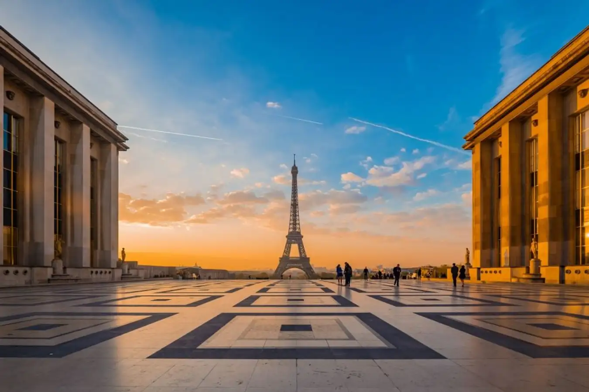

Thông thường tháp Eiffel mở cửa tất cả các ngày trong tuần, thời gian từ 9 giờ sáng đến giữa đêm. Giờ bán vé sẽ kết thúc sớm hơn giờ thăm quan, do vậy nếu bạn muốn thăm quan thì nên lựa chọn thời gian đặt vé sớm.
Khi du khách thăm quan tầng 1 của tháp Eiffel, các bạn sẽ được trải nghiệm mặt sàn trong suốt, mang đến cho bạn cảm giác như đang đi giữa không trung. Tại tầng 2 các bạn có thể sử dụng kính thiên văn để nhìn ngắm toàn bộ vẻ đẹp của thành phố.
Khi đi lên đỉnh của toà tháp các bạn có thể dùng thang máy hoặc thang bộ. Tuy nhiên theo kinh nghiệm của nhiều người với chiều cao là 276 mét thì thang máy chính là sự lựa chọn thích hợp nhất.
Ở tầng 1 và tầng 2 giá vé thăm quan sẽ nằm trong khoảng từ 4 đến '9 euro, giá vé tầng 3 sẽ rơi vào khoảng từ 11 đến 15 euro. Tuy nhiên bạn cần lưu ý tại đây không có túi tủ đựng đồ, vì thế bạn không nên mang quá nhiều đồ khi tham quan.